Table of Contents
- Introduction
- Narcotics
- Stimulants
- Hallucinogens
- Dissociative Anesthetics - Arylcycloalkylamines
- Depressants - Quinazolinones
- Conclusion
- References
The clandestine manufacture of drugs can be defined as the illegal manufacture, compounding or processing of narcotic, stimulant, hallucinogenic or depressant drugs. Prior to the 1960's the major drug clandestinely prepared was heroin (diacetylmorphine, Fig 1). Through the 1960's the manufacture and use of hallucinogenic and stimulant drugs began to increase1 and it was necessary to enact the Controlled Substances Act to control the manufacture and distribution of illicit drugs.1 Even with these controls, an active underground pharmaceutical industry continues to supply controlled and novel substances to the illicit drug market2,3. The quality of the manufacturing personnel within this industry ranges from individuals with no training in chemistry that follow "cookbook" directions, to chemists that appear skilled in drug design and synthesis attempting to keep "ahead of the law by developing new compounds or by changing the molecular structure of existing ones."1 The various approaches to the synthesis of various classes of novel drugs of abuse has been earlier outlined4 and the extent to which the clandestine pharmaceutical industry has succeeded is one aspect of this review.
Another problem related to clandestinely prepared drugs is the quality of the drug formulation finally sold on the "street." Clandestine laboratories do not generally follow current good manufacturing practices (CGMP) and the material used on the street is frequently impure as well as being misbranded and adulterated. The additional substances present with these drugs can be classified as diluents, adulterants, impurities of manufacture and impurities of origin.5,6 Due to the multitude of drug combinations sold in the illicit drug market only the last two classes are discussed in this review since they are characteristic of the synthetic route used in the manufacture of the drug or class of drugs.
Most reports which identify new illicit drugs or impurities are from the forensic drug chemist, primarily because the forensic chemist receives more samples and greater quantities of material than received in a clinical or hospital toxicology laboratory. Within the United States much of this work is done by the Drug Enforcement Administration (DEA) which contains a strong research component consisting of synthetic chemists, analytical chemists, pharmacologists and field investigators trained in chemistry. Comparable forensic laboratories in other countries are also actively involved in identifying the composition of illicit drugs. The occurrence of impurities of manufacture or precursors of origin is of considerable importance to the forensic drug chemist since it provides information as to: 1) whether the drug is clandestinely made, 2) the synthetic route, precursors and reagents being used, 3) the reaction conditions or apparatus necessary for the synthesis, and 4) whether two samples are coming from the same or different laboratories. This synthetic information aids in the investigation and provides evidence during prosecution. This also allows the forensic chemist to anticipate what hazardous conditions may exist when closing a clandestine laboratory (this sometimes occurs under less than friendly conditions). The occurrence of these contaminants have also been of interest to toxicologists, medicinal chemists and pharmacologists since they may modify or enhance the activity of the "parent" drug or may exhibit an activity or toxicity unrelated to the "parent" drug. The dissemination of information about these new drugs in the illicit drug market as well as the pharmacology/toxicology associated with these compounds is an important responsibility placed on the DEA.1 Since the time necessary for normal modes of publication of this information is quite lengthy, the DEA edits and publishes a monthly newsletter entitled "MICROGRAM" which is "restricted to forensic scientists serving law enforcement agencies." This newsletter contains reports from forensic drug laboratories throughout the United States and, occasionally, from international sources with emphasis on drugs and novel analogs currently present in the illicit drug market as well as incidence and extent of impurities of origin and manufacture. The DEA has chosen to control dissemination of this information since practical information that would be of considerable use to clandestine drug manufacturers is also frequently included. Most observations of new or unusual compounds initially appear as anonymous reports which are later followed by separate reports which provide spectral characterization of the chemical for use by the forensic chemist.
Some of the information discussed in this review was originally reported in MICROGRAM and is not available in the open literature. Therefore, when the original authors have published reports in both MICROGRAM and the open scientific literature, only the latter will be cited.
In this review the general classes of clandestinely synthesized drugs are divided into narcotics, stimulants, hallucinogens, dissociative anesthetics and depressants. Each class is then divided into the major synthetic methods for the class of drug (including analogs), occurrence of synthetic impurities and the pharmacology/toxicology associated with the analogs and impurities.
Figure 1
Opium derived contaminants present in heroin
| 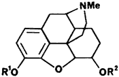 | R1 | R2 | Opiate |
| H | H | Morphine | |
| Me | H | Codeine | |
| Ac | Ac | Diacetylmorphine | |
| Me | Ac | Acetylcodeine | |
| H | Ac | 6-Monoacetylmorphine | |
| 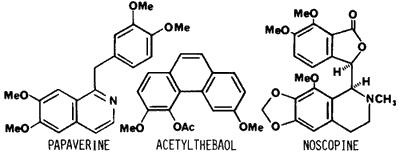 | |||
Until recently the only source of heroin (diacetylmorphine, Fig 1) in the United States was by clandestine synthesis, which was usually done outside the United States. The synthesis is easily accomplished using acetic anhydride or acetyl chloride to acetylate morphine isolated from opium.7 However, depending on what extent the morphine has been purified from the opium prior to synthesis, the resulting "heroin" will contain additional alkaloids and impurities. Continued efforts by the forensic chemist have been directed toward identifying and quantitating these impurities of origin present in heroin. Currently heroin is classified as coming from three major areas of the world and the heroin from these areas is named Southwest Asian (SWA) heroin, South-east Asian (SEA) heroin and Mexican heroin with further subclassifications based on physical appearance and impurities. Throughout this discussion heroin will indicate the crude mixture of alkaloids obtained by acetylation of opium or partially purified opium and diacetylmorphine will indicate pure drug.
The impurities expected to be present in diacetylmorphine are 6-monoacetylmorphine (6-MAM) and morphine. The extent to which these contaminants occur is dependent on the care/skill used in working up the acetylation reaction and preparation of the salt, as well as the conditions under which the heroin is stored prior to its use. As shown in Table 1 the occurrence of 6-MAM in illicit heroin is highly variable with many samples consisting primarily of 6-MAM and morphine.
In addition to morphine, crude opium obtained from Papaver somniferum contains over 25 additional alkaloids. These are divided into the five "chemical" groups: 1) phenanthrene, 2) benzylisoquinoline, 3) tetrahydroisoquinoline, 4) cryptopine and 5) alkaloids of unknown structure. Morphine is included in the phenanthrene group along with codeine and thebaine. Additional alkaloids which are present in relatively high concentrations are cryptopine and the benzylisoquinolines papaverine, noscopine (narcotine), laudanosine and narceine.19 Depending on what extent morphine is purified from the opium prior to acetylation these naturally occurring alkaloids or their acetyl derivatives would be expected to be present. As early as 1962, Nakamura and Ukita20 suggested that acetylcodeine was present in illicit heroin to the extent of approximately 10%. As analytical methodology improved the detection of acetylcodeine in illicit heroin was commonly observed.4,9-12,15,16,21-25 In the studies in Table 1 in which acetylcodeine was quantitated, its concentration relative to diacetylmorphine on a molar basis is usually 10–20% and ranges up to 45%. Although this implies an original concentration of codeine in opium which seems relatively high compared with codeine concentrations reported in many standard texts,26,27 the concentration of codeine (including very high concentrations) is in reasonable agreement with levels of codeine found in United Nations reference capsular tissue of P. somniferum17 and in Indian opium.18 Studies are very limited in which the alkaloids papaverine, laudanosine, cryptopine and noscopine have been reported.12,15,16,24,25,28-30 In the quantitative studies of these alkaloids in illicit heroin (Table 1),12,15,16 both papaverine and noscopine were present in much lower concentrations than expected based on their concentration in crude opium. It would appear that these alkaloids are either removed during purification of morphine and/or undergo some type of reaction (decomposition) during the acetylation procedure. The fact that thebaine is rarely if ever observed in illicit heroin is attributed to its decomposition during acetylation since thebaine readily decomposes in the presence of anhydrides, acid chlorides or strong mineral acids.31,32 Two decomposition products of thebaine have been identified in heroin. These are 3,6-dimethoxyphenanthrene-4,5-epoxide and 3,6-dimethoxy-4-acetoxyphenanthrene (acetylthebaol).15,32,33
Acetylthebaol concentration ranged from 0.003 to 0.33% in 56 samples of heroin.14 To what extent other opium alkaloids are transformed to new products under acylation conditions similar to those used to prepare illicit heroin, has not been reported.
Small and coworkers33 originally reviewed and compared the pharmacological activity and toxicity associated with the diacetylmorphine impurities morphine and 6-MAM (Table II). It was seen that the activity of diacetylmorphine and 6-MAM closely parallel each other with 6-MAM being slightly more active. Both compounds were from 2 to 10 limes more active than morphine depending on the pharmacological effect being evaluated. Recent work continues to confirm these original results.35 It is currently accepted that the activity associated with diacetylmorphine is due to its metabolic hydrolysis to 6-MAM and morphine which are the active forms.36 Although it may be anticipated that the pharmacodynamics or pharmacokinetics of diacetylmorphine and 6-MAM might be different, this has not been observed in behavioral studies following subcutaneous administration in mice35 or in metabolism studies following intravenous administration in dogs.37 Therefore, the pharmacological effects expected from a sample containing both diacetylmorphine and 6-MAM would be comparable to an equimolar sample of pure diacetylmorphine and the quantity of both present would most accurately reflect the strength of an illicit heroin sample.
Pharmacological Effect* of Morphine Based Alkaloids34
Toxicity (mice)a |
Convulsant (mice)b |
Analgesia (cats)d |
Respiratory (rabbits)g |
||||
| Morphine | 1861 |
1861 |
23.7 |
2.63 |
2.0 |
0.77 |
0.53 |
| 6-MAM | 895 |
550 |
2.7 |
0.55 |
0.55 |
0.55+ |
0.058 |
| Diacetylmorphine | 709 |
531 |
3.0 |
1.16 |
1.08 |
0.041 |
|
| Codeine | 806 |
538 |
121 |
26.9 |
26.9 |
53.5+ |
4.3 |
| Acetylcodeine | 290 |
176 |
52.7 |
26.5 |
21.2 |
13.2+ |
* µmoles of alkaloidal base per kilogram
Additive analgesic effects of the alkaloids in opium are reported to occur with crude opium, ie. 20 mg of the hydrochlorides of opium alkaloids with a morphine content of 10 mg of morphine (Pantopon®) is considered therapeutically equivalent to 15 mg of morphine.38 However, disagreement exists on this point.39 To what extent these additional alkaloids or their acetylation products could modify the pharmacological effect of crude heroin does not appear to be an area of recent study. As shown previously the major impurity of origin in heroin is acetylcodeine. In Table II are the results of the animal studies comparing codeine and acetylcodeine to diacetylmorphine, 6-MAM and morphine as originally reviewed by Small and coworkers.34 What is quite unexpected is the toxicity and convulsant activity of acetylcodeine. In the mouse model it was two times more toxic and three limes more active as a convulsant than diacetylmorphine. Based on the common occurrence of acetylcodeine in heroin at relatively high concentrations it could contribute to its toxicity.
The other major alkaloids in heroin are the benzylisoquinolines. Papaverine has been used therapeutically as a nonspecific smooth muscle relaxant and as a coronary vasodilator. At relatively high intravenous doses (100—200 mg), papaverine causes cardiac arrythmias.40,41 Its intravenous LD50 in mice is 80 micromole/kg.42 Noscopine and laudanosine also have vasodilator activity. Noscopine is sold as an over-the-counter, oral, cough suppressant with no addiction liability. Unexpectedly, the toxicity of noscopine is comparable to codeine following subcutaneous administration to mice (LD50 of noscopine is 0.44 mmole/kg vs 0.25 mmole/kg for codeine).43 Cryptopine, when given intravenously to rabbits (8 ng/kg) is reported to cause mydriasis and a general disruption of motor coordination and posture.44 It is unclear if these additional alkaloids, especially at the lower concentrations observed in heroin (except for acetylcodeine) could substantially add to the pharmacology/toxicology of heroin.
Less information is available about the identity and pharmacological effects of the decomposition products formed from the materials present in opium following the synthesis of heroin. Acetylthebaol, derived from thebaine, has been evaluated in cats for its acute effect as an analgesic, general depressant, emetic and hypothermic agent, but was found to have slight to no effect in all of the tests.34 The toxicity or chronic effects of chronic exposure to acetylthebaol has not been reported.
That heroin containing these additional by-products and alkaloids may have an enhanced or different pharmacological profile than that attributable to diacetylmorphine and 6-MAM is suggested when comparing "street" heroin potency and deaths in different regions of the United States.45 In cities along the East Coast, where, primarily, a white and relatively pure form of heroin is sold, there is observed a statistically significant correlation between the number of heroin-related fatalities and the purity of the heroin available.46,47
However, in a comparable study in San Antonio, Texas, where a dark brown Mexican heroin prepared by direct acetylation of opium is prevalent, a non-significant correlation (r = +0.13) was found between potency of street heroin and frequency of heroin overdose.48 In the Texas study this low correlation was considered to be due to uncontrollable variables such as simultaneous use of alcohol and other depressants, hidden suicide and reduced opioid drug tolerance due to institutional treatment. The role of these additional contaminants was not evaluated. Since the method used to characterize the heroin during the study was not described, no further conclusion can be made on the importance of impurities of origin on the toxicity observed.
Figure 2
Synthesis of MPPP and MPTP
A series of totally synthetic analgesics with abuse potential comparable to morphine are the 4-phenylpiperidines. The lead compound in the series, meperidine, is not known to be clandestinely manufactured. Its "reversed" ester, 1-methyl-4-phenyl-4-propionoxy-piperidine (MPPP), in which the carbethoxyl group in meperidine is replaced with the propionoxy group, has been used as a heroin substitute in the illicit drug market,49,50 as had been previously predicted.4 The use of MPPP is probably due to the facile synthesis of this compound as depicted in Fig 251 relative to that of meperidine. In the initial reports describing the synthesis of MPPP there was reported the formation of 1-methyl-4-phenyl-1,2,5,6-tetrahydropyridine (MPTP) as a by-product of the synthesis. MPTP was formed during the reaction with the phenyl grignard, in the acylation step or if the intermediate alcohol was exposed to strongly acidic conditions. Due to the ease with which MPTP is formed it would be expected to be present in MPPP if inadequate sample purification occurs. Clandestinely manufactured samples were observed to range from 27% MPPP 12.5% MPTP (w/w) to 0.3% MPPP 13.2% MPTP.50
As previously stated MPPP is used as a form of "synthetic heroin." In animal studies, 1 mg of MPPP was equivalent to 25 mg of meperidine or 3 mg of morphine51 and at a dose of 3 mg/kg rats developed a catatonic state lasting about 1.5 h.49 The tertiary alcohol intermediates were evaluated and are reported to have slight activity and the tetrahydropyridine had "distinct" activity similar to morphine.51 In later studies MPTP was reported to have no analgesic or sedative effect in mice and was considered "extremely toxic" (LD50 about 150 mg/kg).52,53 No chronic studies with these agents were reported at that time. When a number of individuals repeatedly used MPPP contaminated with MPTP, symptoms characteristic of Parkinson's disease developed. It was proposed that MPTP was responsible for the Parkinson-like symptoms49,50 and this has been substantiated by the report that MPTP caused comparable symptoms in monkeys.54,55 Although usually the abuse of drugs is considered of little benefit to society, the discovery of MPTP may have facilitated the study of Parkinson's disease and is considered a major advance in the field.
Figure 3
Synthesis of fentanyl and analogs observed in the illicit drug market
| 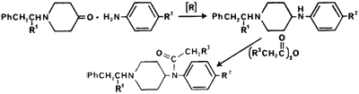 | |||
R1 | R2 | R3 |
Name |
H | H | Me | Fentanyl |
H | H | H | Acetylfentanyl |
Me | H | Me | α-Methylfentanyl |
H | F | Me | p-Fluorofentanyl |
Fentanyl (N-phenyl-N-[1-(2-phenylethyl)- 4-piperidinyl]propanamide) is another modification of the meperidine structure which has been used as a "synthetic heroin." Clandestinely manufactured fentanyl has been observed based on the detection of norfentanyl (N-phenyl-4-piperidinyl-propanamide) in samples.56 Details of the licit or illicit preparation of fentanyl are not readily available. However, the proposed synthesis is depicted in Fig 3.57 During the synthesis of fentanyl, the acetyl analog, acetylfentanyl (N-phenyl- N-[1-(2-phenylethyl)-4-piperidinyl]- acetamide), can occur as a contaminant and is believed formed during the acylation of the anilino nitrogen with propionic anhydride contaminated with acetic anhydride.58 A second potential contaminant is the phenethyl quaternary salt of fentanyl which can be formed during the N-alkylation step. These compounds have not been observed in pharmaceutical quality fentanyl58 and have not been analyzed for in the clandestinely manufactured samples. Three analogs of fentanyl have been observed in the illicit drug market: α-methylfentanyl (N-phenyl-N-[1-(1-methyl-2-phenylethyl)-4-piperidinyl]propanamide),59 p-fluorofentanyl (N-(4-fluorophenyl)-N-[1-(2-phenethyl)-4-piperidinyl]propanamide)60 and acetylfentanyl.61 The clandestinely manufactured analogs are extensively contaminated with synthetic by-products and precursors. A sample of α-methylfentanyl contained 1.9% α-methylfentanyl·HCl, 0.6% propionanilide, 1.2% additional chloroform soluble compounds, and the remainder, lactose.62 In a separate study63 despropionyl-α-methylfentanyl was identified in the body fluids following an α-methylfentanyl death and its occurrence suggested it was in the original drug sample. In a sample of p-fluorofentanyl the intermediates shown in Fig 4 were reported identified.60 A sample of acetylfentanyl was also reported to contain acetanilide, acrylanilide and N-[1-(1-methyl-2-phenylethyl)-4-piperidyl]acrylanilide.61 Except for the first study on α-methylfentanyl no studies to quantitate these intermediates have been reported.
Figure 4
Precursors and byproducts present in a sample of p-Fluorofentanyl
Fentanyl, a drug used exclusively in the licit drug market for operating room anesthesia, can be used as a heroin substitute. It is pharmacologically equivalent to morphine except for its being eighty times more potent with a rapid onset and shorter duration of action.64 In mice, acetylfentanyl is 15 times less potent than fentanyl.65 The synthetic contaminants of fentanyl, N-phenyl-4-piperidinylpropanamide and the phenylethyl quaternary salt are not morphine-like and are atoxic at 40 mg/kg subcutaneously in mice (versus 15 microg/kg in mice for fentanyl).65α-Methylfentanyl, which is often referred to as "China white," has a short duration of action (90 minutes) and is approximately 300 times more potent than morphine in monkeys (ED50 of 1.6 to 6 microg/kg depending on the mouse test)66. Pharmacological effects for the remaining analogs and contaminants are not reported. However, it would be anticipated that the p-fluorofentanyl would have activity comparable to fentanyl.
As has already been observed, due to the high activity of the phenylpiperidines, accidental overdoses can easily occur. Too little is known to anticipate what effects would be observed following acute or chronic exposure to the numerous synthetic contaminants which occur in the 4-phenylpiperidine series.
Those compounds discussed as stimulants are amphetamine, its analogs, and cocaine. There are numerous methods reported for the synthesis of amphetamine. The major methods utilized by the clandestine chemists, using starting materials that can be easily purchased and/or the chemical operations required, are not very sophisticated. The major synthetic routes used in the clandestine synthesis of amphetamine have been recently reviewed.3,67 In the United States during the 45-month period prior to September, 1983, approximately 8-10% of the clandestine laboratories seized by the DEA were manufacturing amphetamine, while during the same time period, 40-55% were manufacturing methamphetamine.3 This contrasts with what was observed in the Netherlands in which 22 clandestine laboratories were manufacturing amphetamine and only one laboratory was synthesizing methamphetamine.67 The synthetic procedures used for amphetamine and methamphetamine as well as the impurities of manufacture present in the "finished" product do not completely overlap. Therefore, each compound will be discussed separately.
Figure 5
Commonly occurring synthetic impurities present in amphetamine
or methamphetamine prepared from phenyl-2-propanone
An important precursor common to both amphetamine and methamphetamine is phenyl-2-propanone (P2P, phenylacetone, methyl benzyl ketone). Until February 11, 1981 it was available commercially as a generally useful synthetic intermediate. Because of its facile conversion to amphetamine and methamphetamine it is now listed as a Schedule II-controlled substance and there are clandestine laboratories that now synthesize only P2P. In the review by Frank3 four major syntheses of P2P were reported. The most frequently used method (75%) is shown in Fig 5 starting with phenylacetic acid, acetic anhydride and sodium acetate or pyridine. Additional synthetic routes include reacting phenylacetic acid and acetic add in a combustion tube containing thorium oxide or manganese oxide catalyst (approximately 5%); reacting benzyl cyanide, ethyl acetate and sodium ethoxide to form α-phenyl-acetoacetonitrile followed by hydrolysis and decarboxylation (approximately 10%); and reacting benzaldehyde and nitroethane in butylamine to form 1-phenyl-2-nitropropene followed by reduction with iron and hydrochloric acid (approximately 4%). The most common synthetic by-product present in P2P prepared from phenylacetic acid is dibenzylketone.68 Impurities present using the other methods have not been reported. As expected, the ketones, P2P or dibenzylketone, are rarely observed in clandestinely manufactured amphetamines due to the use of amphetamines in the salt form.
In both the United States and the Netherlands the Leuckart reaction (Fig 7) was being used to synthesize amphetamine in 70-90% of the clandestine laboratories. Since the Leuckart reaction is often encountered there are several reports identifying impurities of manufacture. These impurities include synthetic intermediates as well as those associated with impure reagents. The only synthetic intermediate reported for amphetamine is N-formyl-1-phenyl-2-aminopropane (N-formylamphetamine).69 It has been detected in trace amounts and is due to incomplete acid hydrolysis in the final step. Of the strongly basic amines the anticipated by-product of the Leuckart reaction is successive reaction of amphetamine with P2P to form the secondary and tertiary amines,70 di(1-phenylisopropyl)methylamine and tri(1-phenylisopropyl)methylamine, The secondary amine has been observed in illicit amphetamine prepared via both the Leuckart route and by reductive amination using hydrogen and catalyst. The tertiary amine was also reported to be observed,71 however, the material believed to be the tertiary amine was incorrectly identified and was subsequently found to be the N-formyl derivative of the secondary amine, di(1-phenylisopropyl)formamide.72 It should be noted that di(1-phenylisopropyl)methylamine and its formyl derivative have two chiral centers. A diasteromeric pair and a meso stereoisomer are expected to be present and this has been suggested based on the GC and HPLC analysis of illicit amphetamine. The di(1-phenylisopropyl)formamide appeared as two peaks71,72 with the mass spectrum of each peak nearly identical.72
Figure 6
Weakly basic synthetic contaminants present in amphetamine
synthesized using the Leuckart procedure
Additional contaminants that are reaction specific for the Leuckart synthesis are the weakly basic amines. In Fig 6 are tri- and tetrasubstituted pyridines,73-75 pyrimidines76 and a dihydropyrid-3(H)-4-one77 which have been identified in illicitly manufactured amphetamine.
Impurities present in the starting material and reagents account for the remaining contaminants. The dibenzylketone in P2P will react with formamide in the reductive amination reaction to give the dibenzylketone amine counterpart of amphetamine, 2-(phenylmethyl)-phenylethylformamide (Fig 5). Acid hydrolysis gives 2-(phenylmethyl)phenethylamine69 which is commonly detected in illicit amphetamine. Formamide containing acetamide would account for 2,4-dimethyl-3-phenyl-6-(phenylmethyl)- pyridine73 identified. In the reports on these impurities there has been no quantitation of these contaminants.
Additional contaminants detected in illicit amphetamine include N-(1-phenylisopropyl) benzylmethylketamine,78 N-(1-phenylisopropyl)benzaldimine,78 N-acetylamphetamine and 1-oxo-1-phenyl-2-(1-phenylisopropylimino)- propane.79 These compounds are not considered to be route specific since they can be obtained by refluxing equivalent amounts of amphetaminne and P2P under dehydrating conditions.67
Figure 7
Clandestine methods used to synthesize methamphetamine
The major methods used to synthesize methamphetamine are shown in Fig 7. In the methamphetamine laboratories seized by the DEA in contrast to the amphetamine laboratories, only a small number (10%) used the Leuckart route.3 The most popular method (50%) and by far the easiest and cheapest is the reductive amination using P2P, methylamine, aluminum (from aluminum foil), mercuric chloride (catalytic amount) and alcohol.80 Due to the controls placed on P2P an increasing number of the laboratories are trying to synthesize methamphetamine using benzyl chloride, acetaldehyde and methylamine (10%). However, the synthetic protocol in the underground publication gives an incorrect sequence for addition of reagents, therefore, none of the laboratories using this method were successful in synthesizing methamphetamine.3 The remaining synthesis converts ephedrine to methamphetamine (10 laboratories) by reductive cleavage of the hydroxyl group. Finally, two laboratories have been found which simply extract l-methamphetamine from over-the-counter nasal inhalers.3
The synthesis of either amphetamine or methamphetamine from P2P, regardless of the synthetic procedure used, will give a racemic mixture. However, when using ephedrine as the precursor, its chirality will determine the chirality of the methamphetamine formed. Retention of configuration will be observed during the reduction and this has been verified in the conversion of phenylpropanolamine to amphetamine.81 Extensive reports characterizing the enantiomeric composition of illicit amphetamine or methamphetamine have not been reported. Analytical methods are available for characterizing each enantiomer. However, this is not routinely done by the forensic drug chemist since the law currently treats the d and I isomers of both amines as Schedule II drugs unless present in the appropriate drug formulation.
The impurities present in illicit methamphetamine have been thoroughly reviewed by Kram and Kruegel.82 In addition to discussing the impurities identified in the "finished" product they have also reviewed contaminants present in reaction mixtures obtained from clandestine laboratories.
The strongly basic impurities associated with the Leuckart route are the N-methyl analogs observed with amphetamine, N-methylamphetamine formamide83,84 and N-methyl-di(1-phenylisopropyl)methylamine.85 In 30 randomly selected samples, N-methylamphetamine formamide ranged in concentration from 10 to 39% (w/w) relative to methamphetamine.83 In a different study the concentration of N-methyl-di(1-phenylisopropyl)-methylamine in eight samples ranged from 3-15% relative to methamphetamine.85 Also, N-methyl-2-(phenylmethyl)phenethylamine is found and can be attributed to dibenzylketone present in the P2P.8 In two separate reports on illicit methamphetamine received in Texas, one sample contained 41% methamphetamine and 31% N-methyl-2-(phenylmethyl)phenethylamine86 and the other sample was 21% methamphetamine and 30% N-methyl-2-(phenylmethyl)phenylethylamine.87 In the Leuckart synthesis ammonia and N,N-dimethylamine may be present as contaminants in methylamine (formamide and N,N-dimethylformamide as contaminants in N-methylformamide). Therefore, the presence of N-formylamphetamine in methamphetamine can be readily explained and is specific for the Leuckart synthesis.82 Additional by-products which can be formed during the Leuckart route or by reductive amination due to these impurities include amphetamine, di(1-phenylisopropyl)methylamine, 2-(phenyl-methyl)phenylethylamine and N,N-dimethylamphetamine in low concentrations.82,88 In methamphetamine believed to be prepared by methods other than the Leuckart, methylamine and N-methyldiphenethylamine have been identified.82 In reaction mixtures obtained from clandestine laboratories, P2P, phenyl-2-propanol, formic acid, dibenzylketone and all the previously mentioned contaminants have been identified.82
The reductive amination procedure using an aluminum-mercury amalgam goes in extremely high yields and a very pure product can be obtained. However, inadequate purification at the final step can lead to an off-white or grey product containing mercury and probably aluminum. Samples from 15 of 25 methamphetamine laboratories were found to contain mercury ranging from trace levels (less than 0.1 ppm) to 1300 ppm mercury. The form of the mercury in the sample was not determined.89 There has been no comparable study to identify weakly basic amines formed during the synthesis of methamphetamine.
Additional amphetamine analogs identified in the illicit drug market are N-ethylamphetamine,90,91 N,N-dimethylamphetamine92 and 4-methylamphetamine.93-95 Neither the method of manufacture nor the impurities of manufacture have been reported for these analogs; however, N-ethylamphetamine and N,N-dimethylamphetamine would probably be manufactured in a manner similar to methamphetamine except for changing the amine. 4-Methylamphetamine is most likely produced from either 1-(4-methylphenyl)-2-propanone or 4-methylbenzaldehyde (p-tolualdehyde) since both are commercially available. N-Ethylamphetamine was first detected as a drug of abuse by the forensic community during the summer of 1976.90 It was soon found to be clandestinely synthesized in six states and on January 7, 1982, it was placed in Schedule I of the Controlled Substances Act. N,N-Dimethylamphetamine and 4-methylamphetamine have occurred very sporadically in the drug market and neither is regulated under the Controlled Substances Act.
Based on the numerous methods used for the syntheses of either amphetamine or methamphetamine and the presence of either amine as a synthetic contaminant in the other, plus the possibility that either the d or I isomers or racemic mixtures are present, it is useful to reference the pharmacology associated with each of these compounds. Both amphetamine and methamphetamine are used primarily as CNS stimulants. However, they also have anorexic, circulatory (hypertensive) and hyperthermic properties.96,97 Biochemically they are both believed to act by release of biogenic amines, primarily norepinephrine and dopamine, from storage sites in nerve terminals both centrally98 and peripherally. The pharmacological effects of both amines are similar except for the difference in degree of central and peripheral effects.
In animal studies the peripheral pressor activity for racemic amphetamine in dogs is approximately 2–3 times more than racemic methamphetamine99 yet only 0.6 times as active in CNS stimulant activity in mice (ie, racemic methamphetamine is 1.7 times more active).100 In the therapeutic use of racemic amphetamine and methamphetamine in humans, they are used in approximately equal doses with methamphetamine being considered more active as a CNS stimulant.101 The pharmacological effects associated with the enantiomers of the amines are marked. The d isomer of amphetamine is about twice as potent as the racemic form in clinical trials in normal individuals and in patients with narcolepsy, postencephalitic Parkinson's disease and postural hypotension.101 in mice d-amphetamine is 10 times as potent as l-amphetamine in enhancing locomotor activity.102 The peripheral pressor effects in dogs for l-amphetamine and l-methamphetamine is 1.4 times greater than the d isomers.99 Both d- and l-methamphetamine are comparable in peripheral vasoconstrictor activity on the rabbit ear (1:1) and vasopressor response in the cat (1:2). The CNS effects of d-methamphetamine are 4 to 8 times greater than l-methamphetamine depending on the animal model (analeptic, respiratory stimulation and motor activity). l-Methamphetamine is 1/4 to 1/5 times as toxic as d-methamphetamine and l-methamphetamine causes a more rapid death (within 40 minutes) in mice while d-methamphetamine is associated with delayed death (2 hours or more).103 It is readily apparent that the pharmacological/toxicological response to clandestinely prepared amphetamine or methamphetamine can be highly varied depending on the chiral property of the isopropyl amine. Studies related to the optical activity of amphetamine and methamphetamine in the illicit drug market are not currently available although it would be assumed that the racemic mixtures are most prevalent.
The information concerning the pharmacology of the impurities of manufacture are very limited. (+)-N-formyl-1-phenyl-2-aminopropane was reported to have anorectic properties without undesired CNS stimulation or cardiovascular effects.104 The strongly basic amine, 2-(phenylmethyl)phenethylamine has been the most extensively tested. It was initially observed to have local anesthetic activity along with irritant properties.105 In toxicity studies it had a hypotensive effect in rabbits and caused death by respiratory collapse. The 50% lethal dose was 198.5 mg/kg by continuous infusion and 31.7 mg/kg by single dose.106 It has been reported to exhibit strong CNS stimulant activity and to have detrimental effects on isolated rabbit and frog heart muscle. The subcutaneous LD50 in mice was 160 mg/kg;107 the comparable LD50 for racemic amphetamine sulfate is 7 mg/kg.108 Finally, 2-(phenylmethyl)phenethylamine has been implicated in a death in Albuquerque, New Mexico.109 P2P and phenyl-2-propanol exhibit depressant like activity in mice at high doses (loss of righting ability, LRA50, of 215 and 330 mg/kg) and were relatively non-toxic (intraperitoneal LD50 of 520 and 540 mg/kg, respectively).110 There is no literature describing the activity of the remaining impurities of manufacture.
The N-ethylamphetamine, N,N-dimethylamphetamine and 4-methylamphetamine are included in this section because they all exhibit primarily CNS stimulant activity. Based on spontaneous locomotor activity in mice both N-ethyl and N,N-dimethylamphetamine exhibit 1/2 and 1/5 less CNS activity than amphetamine111 Human metabolism studies on these analogs show that 8-15% of N-ethylamphetamine is metabolized to amphetamine112,113 and 15-20% of N,N-dimethylamphetamine is converted to methamphetamine with 0.8-2.4% metabolized to amphetamine.113 These metabolites will contribute significantly to the CNS stimulant activity of these analogs. 4-Methylamphetamine has been explored for clinical use as an anorexigenic agent due to its minimal central stimulant activity and decreased pressor activity relative to amphetamine. Abuse potential for 4-methylamphetamine appears unlikely because it causes overt signs of toxicity (gastric distress, salivation, coughing, vomiting) before causing central stimulation in humans).114
Cocaine, the last of the stimulants to be discussed, is obtained from the leaves of plants belonging to the polymorphic species, Erythroxylum coca Lam., from which three varieties are used commercially to produce cocaine. The coca leaves contain three major groupings of alkaloids in which their content varies both qualitatively and quantitatively according to variety and development of leaves. The major alkaloid groups in coca paste are 1) ecgonine derivatives (cocaine, cis- and trans-cinnamoylcocaine, alpha- and beta-truxilline); 2) tropines (tropacocaine, valerine); and 3) hygrines (hygroline, cuscohygrine).115 Cocaine is purified from these additional alkaloids using two different techniques. Pure or pharmaceutical grade cocaine is prepared by initial hydrolysis of the total base extract to obtain l-ecgonine from which cocaine is resynthesized by esterification first with methanol, then with benzoic acid.115 The second method for purification is that reported to be done in the coca-producing areas and involves acid extraction followed by successive recrystallizations.116 This process usually gives an impure cocaine and additional alkaloids observed are benzoylecgonine, methylecgonine, ecgonine, cis- and trans-cinnamoylcocaine and tropacocaine,116-124 Fig 8. Methylecgonidine is also observed in illicit cocaine when analyzed using gas chromatography or GC/MS125 and is believed to be an artifact of the analytical procedure (thermal elimination of benzoic acid in the injection port of the gas chromatograph).118 Due to the large quantifies of cocaine coming into the United States, uncut cocaine is often obtained yet contains only 70-90% cocaine as the hydrochloride salt. It was initially anticipated that the combined ecgonine alkaloids could account for the remainder of the samples. The most complete study is by Clark120 of 40 illicit cocaine samples in which all of the ecgonine alkaloids, except benzoylecgonine, were quantitated relative to the cocaine concentration (w/w). Using trimmed means the amount of ecgonine alkaloid relative to cocaine HCl were: trans-cinnamoylcocaine HCl, 0.47% (range 0.1 to 2.61%); cis-cinnamoylcocaine HCl, 0.64% (range 0.1 to 3.18%); ecgonine HCl, 1.33% (range 0.1 to 15.1%, 19 samples were below 0.1% quantitation range and the mean was determined for the remaining 21 samples); methylecgonine HCl, 0.42% (range 0.1 to 2.7%).
Figure 8
Impurities of origin in illicit Cocaine
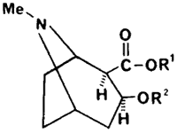
| R1 | R2 | Alkaloid |
| Me | COPh | Cocaine |
| H | COPh | Benzoylecgonine |
| Me | H | Methylecgonine |
| Me | COCH=CHPh | Cinnamoylcocaine |
Due to crystallization behavior similar to cocaine the cinnamoylcocaines are most frequently detected and quantitated in illicit cocaine. In earlier studies the cinnamoylcocaines had been detected in 38%121 to "more than half"116,119 of the samples analyzed, usually in a concentration of 1% or less.116,120,123 Also, small amounts of tropacocaine have infrequently been detected in illicit cocaine.124 Since the ecgonine contaminants do not appear to account for the remainder of the sample in uncut illicit cocaine the volatile components (components which give the distinctive odor to cocaine) have also been studied. Twenty-eight samples were analyzed for acetone and ether (solvents frequently used in recrystallization), methyl benzoate and methycinnamates.126 Acetone was present in all samples analyzed, including the commercial standard, in about 0.5% ±0.2%. Diethylether was present in all the samples but at a lower concentration, 0.13% ±0.06. Methylbenzoate and methylcinnamates were present in extremely low concentrations, 0.096 ±0.098% and 0.024 ±0.039%, respectively. It appears that volatile components do not account for the difference. In a single sample of cocaine, benzoylecgonine, methylecgonine and ecgonine were present in concentrations of 2.3, 1.1 and 1.0%, respectively. Cis- and trans-cinnamoylcocaine accounted for 6.9%, water 3%, acetone and ether 0.9% and unknown 1-2%.123 It appears that no major single contaminant accounts for the 10 to 30% of the material in uncut cocaine.
Mention should be made that the total synthesis of cocaine has long been available in the literature;127 its clandestine synthesis has been suggested but has not been routinely observed.4
Cocaine is still used therapeutically due to its combination of effects as a local anesthetic with vasoconstricting activity. Its abuse potential is associated with its CNS-stimulant activity which appears to be associated with its ability to block reuptake of endogenous amines in the sympathetic nervous system as well as to potentiate the effects of exogenous amines.128 The pharmacological effects of the contaminants, benzoylecgonine, methylecgoninne and ecgonine have been studied since all of these alkaloids occur as metabolites of cocaine.129 In rats, no pharmacological effects were observed following intravenous administration of ecgonine (200 mg/kg), methylecgonine (200 mg/kg) or benzoylecgonine (250 mg/kg), whereas intravenous cocaine at 20 mg/kg caused excessively rapid heart beat, convulsions and death within 3-5 minutes. Although benzoylecgonine is inactive following parenteral administration, intracisternal injection (1 mg/kg) to rats produced stimulant effects which were described as being "distinctly different" from those observed with cocaine.130,131 It would appear that ecgonine, methylecgonine or benzoylecgonine present in illicit cocaine would not contribute to the pharmacological effects of cocaine. Surprisingly, no reports describing the pharmacological effects of the cinnamoylcocaines were found, yet both cinnamoylcocaine and cinnamoylecgonine (isomers not specified) have been detected in the urine of cocaine abusers and in a post-mortem bile sample of a cocaine abuser.132
Tropacocaine, the other minor contaminant, has long been recognized as a local anesthetic useful for opthalmic work in humans. Both in rabbits and dogs, tropacocaine exhibits less than one-half the toxicity of cocaine133 and due to the small and infrequent occurrence of tropacocaine, it would be expected to contribute little to the pharmacology associated with illicit cocaine.
The hallucinogenic agents that occur in the illicit drug market can be divided into two categories, the substituted phenylalkylamines and the indole-based compounds.
Figure 9
Synthesis of phenylalkylamine hallucinogens
The use of the phenylalkylamine hallucinogens has steadily increased since their introduction in the late 60's. Listed in Table III are the phenylalkylamines which have been characterized and identified within the illicit drug market. The general route of synthesis is depicted in Fig 9. The appropriately substituted benzaldehyde is purchased commercially or is prepared clandestinely.3 Using the Knoevenagel reaction the aldehyde is condensed with nitromethane or nitroethane followed by reduction with lithium aluminum hydride or hydrogen and catalyst to give the desired phenylalkylamine. The bromophenylalkylamines are prepared from the appropriate phenylalkylamine by reaction with elemental bromine. An alternative route to the phenylisopropylamines is by preparation of the substituted phenylacetone followed by reductive amination with the appropriate amine (conditions analogous to those used for amphetamine or methamphetamine). This route is known to be used for the clandestine synthesis of 3,4-methylenedioxyamphetamine3 and is the most efficient route to the N-methyl and N-ethyl analogs of 3,4-methylenedioxyamphetamine. Alternative methods used for synthesis of the phenylethylamines, such as mescaline, have been previously reported.2,151 Impurities of manufacture have not been reported for these hallucinogens except for the presence of 4-bromo-2,5-dimethoxyphenethylamine in 4-bromo-2,5-dimethoxyphenylisopropylamine.141 This impurity can be attributed to nitromethane present in the nitroethane in the condensation step. This suggests that depending on the purity of the nitroethane used in the synthesis of the other phenylisopropylamines, related contaminants could be anticipated; they have not been reported.
Due to the numerous phenylalkylamine hallucinogens abused along with those having potential for abuse in the illicit drug market, it is useful to describe the general structure-activity relationships of these compounds as it relates to their hallucinogenic properties. This is facilitated by the excellent reviews that are currently available on hallucinogens.114,152,153 It is unique that extensive quantitative human data on these hallucinogenic phenylalkylamines are known and this can be attributed to the studies by Shulgin and coworkers. Briefly, the incorporation of a methoxyl(s) or methylenedioxy group or combination of these groups into the aromatic ring changes the activity of the phenylisopropylamine from being primarily stimulant to primarily hallucinogenic. The psychotropic potency of the compound depends not only on total density and location of substituents on the aromatic ring but also on the specific nature of the substituent. As is seen in Table III the 2,4,5-trisubstitution pattern gives compounds of optimal hallucinogenic activity. In all of the hallucinogens the 4-substituent is of major importance in that it can increase lipophilicity (increasing CNS penetration), provide resistance to oxidative metabolism and increase hydrophobic binding at the receptor. The nitrogen, two carbons from the aromatic ring, is required for activity and introduction of the methyl group alpha to the nitrogen increases activity over the ethylamine counterpart (this is due to both inhibition of metabolism at the nitrogen and increased lipophilicity). The alpha-methyl also introduces a chiral center in which the (R)-enantiomer is the more active hallucinogen.154 Generally, N-alkylation drastically attenuates the hallucinogenic activity. This is seen with the N-methyl and N-ethyl analogs of 3,4-methylenedioxyamphetamine in which they cause primarily stimulant activity while 3,4-methylenedioxyamphetamine acts primarily as a hallucinogen. Dialkylation, even in 3,4-methylendioxyamphetamine, abolishes hallucinogenic activity. The molecular mechanism responsible for the hallucinogenic effect of these phenylalkylamines is currently unknown. It is important to note that in all of these reviews, hallucinogenic activity is being evaluated and the other peripheral and CNS effects are not the focus of the review. Fatalities have not been reported with hallucinogens except for 4-methoxyamphetamine,135 4-bromo-2,5-dimethoxyamphetamine155 and 3,4-methylenedioxyamphetamine.156 Shulgin considers 4-methoxyamphetamine a "treacherous" drug to study in humans because of its steep dose-response curve. A therapeutic index of about 2.5 is suggested.114 When this drug was first available in the illicit market a number of deaths occurred throughout Canada and the United States. The toxic symptomatology which was very similar to amphetamine included agitation, convulsions, respiratory depression, hypertension and hyperthermia. The molecular mechanism of death is not known. The other hallucinogen associated with a human death, 4-bromo-2,5-dimethoxyamphetamine, appeared to be a relatively safe drug to abuse,114 however, at high doses it was observed to cause disorientation, cardiovascular distress and convulsive complications. The single death associated with this drug was at very low concentrations and based on both toxicological and pathological data it appeared to be due to an acute allergic reaction to the drug rather than its pressor effects.155 3,4-Methylenedioxyamphetamine although relatively non-toxic, at high doses has toxic responses similar to amphetamine toxicity.157,158 For all of the hallucinogens a variety of additional pharmacological effects in animal models are known since these effects were being measured to see if they could be used to accurately predict human activity as a hallucinogen. However, how these pharmacological effects in the animal models could be used to explain toxicological effects in humans has not been evaluated.
Figure 10
Indole-containing compounds observed in the illicit drug market
| 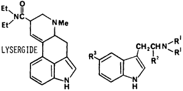 | R1 |
R2 |
R3 |
Name |
Me |
H |
H |
DMT |
|
Et |
H |
H |
DET |
|
n-Pr |
H |
H |
DPT |
|
-(CH2)4- |
H |
H |
Pyr-T |
|
Me |
H |
MeO |
5-MeO-DMT |
|
H |
Me |
H |
α-Me-T |
The second category of hallucinogens include the indole-based compounds; the substituted tryptamines and lysergamide alkaloids. The N,N-dialkyltryptamines observed in the illicit drug market (Fig 10) are 3-(2-dimethylaminoethyl)- indole (DMT),2,159 3-(2-diethylaminoethyl)- indole (DET), 3-(2-dipropylaminoethyl)- indole (DPT).161 The tryptamines are usually synthesized by the method of Speeter and Anthony162 (Fig 11) or by the gramine method.163 The related tryptamines, alpha-methyltryptamine164,165 and 5-methoxy-N,N-dimethyltryptamine166 have been identified in the illicit drug market. The characterization of synthetic contaminants has been reported only for 3-(2-pyrrolidinoethyl)indole. It appeared to be synthesized using the Speeter and Anthony method based on the isolation and characterization of 3-indolyl-glyoxypyrrolidide and N-[1-hydroxy-2-(3-indolyl)ethyl]pyrrolidine present in the sample.161 In the same study a comparable intermediate, 1-(N,N-diethylamino)-2-(3-indolyl)ethan-1-ol, was also identified when preparing the N,N-diethyltryptamine by this method. These carbinolamine contaminants are very unusual in that they were reported to be stable to acid-base extraction and preparative TLC purification. It is probable that the carbinolamine intermediates are incorrectly identified and are the more stable N-[2-hydroxy-2-(3-indolyl)ethyljpyrrolidine and 1-(N,N-diethyl)-2-(3-indolyl)ethan-2-ol. The revised structures are consistent with the reported spectral data for both compounds. In addition, 1-(N,N-dimethyl)-2-(3-indolyl)ethan-2-ol has been previously identified as a synthetic contaminant following the reduction of N,N-dimethyl-3-indoleglyoxylamide with lithium aluminum hydride and using a non-acidic workup.167
Figure 11
Synthesis of 3-(2-pyrrolidinoethyl)indole and synthetic impurities observed
* Probable structure of previously identified contaminant
The abuse of these indole derivatives in man is for their hallucinatory effects. The N,N-dialkyltryptamines in which the alkyl group is varied from. methyl to propyl, are all active in humans as hallucinogens at approximately equivalent doses (1 mg/kg by parenteral administration or inhalation).168,169 The duration of hallucinatory effect increases with increasing alkyl substitution on the nitrogen: DMT - one hour, DET - 3 hours, and DPT - 1.5 to 6 hours depending on dose. Based on animal studies the 3-(2-pyrrolidinoaminoethyl)indole is much less behaviorally active than DET and much more toxic.170 5-Methoxy-N,N-dimethyltryptamine is 10 times more potent and alpha-methyltryptamine is two to three times more potent as a hallucinogen in man than the dialkyltrypamines.168 The 3-(2-dimethylamino-1-hydroxyethyl)indole should have decreased hallucinatory activity in humans based on a related series of tryptamines171 and is reported to have hypotensive and diuretic activity.172 It should be emphasized that in addition to the hallucinatory effects of the tryptamines, depending on dose, they exhibit multiple effects on smooth muscle (ie., cardiovascular, uterus, renal, etc.).171
Lysergide (N,N-diethyl-D-lysergamide, LSD) is the most prevalent indole hallucinogen abused, yet clandestine laboratories synthesizing LSD are encountered infrequently? Total synthesis of lysergide by clandestine laboratories has not been reported. Instead the preferred route utilizes lysergic acid obtained through aqueous alkaline cleavage of the ergot alkaloids, ergotamine or ergonovine.2 Activation of the carboxyl group for condensation with diethylamine can then be achieved using a variety of coupling agents.173 There has been a single report of observing N,N-dimethyl-D-lysergamide in the illicit drug market.174 There have been no reports characterizing or quantitating any of the anticipated by-products or impurities in lysergide,175 although they are "present in many seizures."176 This is probably because of the small quantities usually encountered and the variety of dyes that are frequently present in the formulations.
The mechanism by which lysergide causes its hallucinogenic activity is currently unknown.153,177 Lysergide appears to have very strict structural requirements with the dimethyl analog approximately 1/10 the hallucinogenic activity of LSD in humans.178 The intravenous toxicity in rats of the dimethyl analog (LD50 of 0.4 µg/kg) is comparable to lysergide (LD50 of 0.3 µg/kg).177
1-(1-Phenylcyclohexyl)piperidine (phencyclidine, PCP), is the prototypic compound of the class referred to as arylcycloalkylamines.179 Two basic methods of clandestine manufacture of PCP have been observed. The most common method (84% of the clandestine laboratories in the United States), uses 1-piperidinocyclohexanecarbonitrile (PCC) as a synthetic intermediate (Fig 12).3 This intermediate is prepared from the bisulfite addition product of cyclohexanone followed by treatment with potassium cyanide and piperidine180 or by directly mixing piperidine hydrochloride, cyclohexanone and potassium cyanide181 to yield beautiful white, ice-like crystals of PCC. PCC is then dissolved in either diethylether or kerosene and reacted with phenylmagnesium bromide to give PCP. The literature yields for the last step range from 55 to 73%. The alternative method for preparing PCP is through formation of the enamine, 1-(1-cyclohexenyl)piperidine, conversion to the imine with p-toluenesulfonic acid and reaction with phenylmagnesium bromide.182 Approximately 16% of the laboratories were using this method.3 An alternative synthetic intermediate, 1-phenylcyclohexylamine,181 is listed in the Controlled Substances Act as a Schedule II immediate precursor to PCP, however, it has not been observed to be clandestinely manufactured.
Additional arylcycloalkylamines that have been observed are shown in Table IV.182-192 PCC can be used as the synthetic intermediate for the thiophene analog.181 The analogs in which the amine is tertiary are prepared by reaction of the appropriate alpha-aminonitrile with phenylmagnesium bromide. The secondary amines, N-ethyl- and N-propylphenylcyclohexylamine, can be synthesized by acylation of 1-phenylcyclohexylamine followed by reduction with lithium aluminum hydride or by reaction of the imine (formed by the condensation of the amine with cyclohexanone) with phenyllithium. This same reaction of the heterocyclic aminonitriles with phenyllithium does not give the expected arylcycloalkylamine.181
Although it is expected that crystalline PCP would be relatively pure, considerable difficulty is encountered in obtaining it free of PCC even following repeated recrystallizations.193 PCP is frequently obtained coated over green plant material (parsley, mint, marihuana) in which minimal sample purification occurs.194 Indeed, according to one "recipe" following the grignard reaction the reaction mixture is "spooned" directly over the parsley, mixed, the solvent allowed to evaporate then distributed for use.195 The possibility for significant quantities of impurities is quite obvious. It is interesting to note to what extent PCC contamination has been observed. Although abuse of PCP first occurred in the late 60's182 PCC was not detected until early in 1975.196-198 Since then there have been a number of reports in which PCC has been quantitated.194,199-202 An early study suggested that contamination of PCP with PCC was not significant199 while another study suggests extensive contamination.194 Depending on the formulation being analyzed the extent of contamination was highly variable. Generally, tablets and capsules had the lowest level and incidence of contamination while powders and green-plant material usually contained PCC, frequently at very high concentrations. It would be expected that contamination would be even more extensive than that observed. The low levels of PCC can be partially explained by the methods used to analyze for PCC. PCC, as a reactive synthetic intermediate, will partially decompose during thin layer chromatography203 or during the extraction process.194,204 The preparation of the sample prior to analysis is important and unless the analytical procedure is designed to take this decomposition into account, low values for PCC would result. In the one report in which a sensitive colorometric technique was used to quantitate released cyanide from decomposition of PCC, every sample contained PCC, although in low concentrations.202 Piperidine has also been identified as present in PCP but no attempts have been made to quantitate it.205 At least 13 additional nitrogen-containing compounds have been found to be formed during the synthesis of PCP from PCC.181,206 Three of these compounds have been identified as 1-[1-(phenylethyl)cyclohexyl]piperidine (ethyl-PCP), 1-[1-(1,1'-biphenyl-4-yl)cyclohexyl]piperidine (biphenyl-PCP) and 1,1'-1,4-phenylenedicyclohexylidine)-bis[piperidine] (bis-PCP). Respectively, they accounted for 0.5%, 1% and 0.5% of the basic fraction. Analytical methods were developed to assay for these impurities in samples from illicit sources. However, no occurrence or quantitation of these amines in illicit samples was reported.207 Multiple "amine" impurities were reported in illicit 1-(2-thienylcyclohexyl)piperidine, but only piperidine was identified.184 Impurities of manufacture have not been reported for any of the other analogs, although analytical methodology is available for their detection and quantitation.
Arylcycloalkylamines Observed in the Illicit Drug
Market and Relative Discriminate Potency in Rats
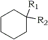 |
|||
R1
| R2 | Name | Potency |
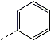 | 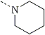 | PCP | 1.0 |
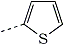 | TCP | 1.46 | |
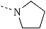 | PHP (PCPY) | 0.91 | |
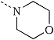 | PCM | 0.1 | |
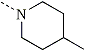 | 4-MePCP | 0.1 | |
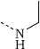 | PCE | 4.8 | |
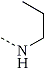 | NPPCA | 9.97 | |
The molecular mechanism by which PCP and the related arylcycloalkylamines cause their anesthetic and psychotomimetic effects in man is currently unknown. In contrast to the phenylalkylamine hallucinogens, comparative pharmacology of the arylcycloalkylamines in humans is not available. Their relative activity has been estimated by a multitude of assays on different tissue preparations and animals.208,209 The behavioral activity of these arylalkylamines using rat-discrimination models (Table IV) ranges from 1/10 to 5 times that of PCP. The analogs appear to have pharmacological activity qualitatively similar to PCP.208 This activity seems to parallel what is observed in humans182,183 Most of the analogs illicitly used involve changing piperidine to a different heterocyclic or alkylamine group. The reason for modification at this ring is that the DEA monitors sales of piperidine and in 1976 a one-kilogram bottle of piperidine which was not traceable could command an exorbitantly high price ($1000).182 Currently the sale of piperidine is restricted solely to legitimate and recognized industrial and educational laboratories. In addition to the difficulty in obtaining piperidine, an additional reason for use of the analogs is that the analogs do not show up in many of the routine screens used to monitor drug abusers (radioimmunoassay and thin layer chromatography).186 The presence of the 4-methylpiperidine analog was associated with a theft of three partially filled, 55-gallon drums of piperidine, nine drums of 4-methylpiperidine and six drums of 2-methylpiperidine from a legitimate laboratory in Indiana.210 It appeared as though the 2-methyl- and 4-methylpiperidine may have been mistaken for piperidine during the theft. It further appears that the clandestine chemists recognized that 4-methylpiperidine could be substituted for piperidine in the chemical synthesis, and 1-(1-phenylcyclohexyl)-4-methylpiperidine was soon detected across the country (Washington, D.C., California and New York), ie, waste not want not. The behavioral activity of the arylcycloalkylamines does not always parallel their toxicity. This is seen with 1-(1-phenylcyclohexyl)-4-methylpiperidine which exhibits a much smaller therapeutic index (as observed in mice) than that observed with PCP.189
Many studies have been directed toward determining the pharmacology/toxicology associated with the impurities of manufacture of PCP. The acute toxicity of PCC appears to be associated with its ability to release cyanide. This was initially proposed by Bailey and coworkers198 based on the protective effect of sodium nitrite and sodium thiosulfate on the lethality of PCC in mice. Additional studies have confirmed this interpretation193,201,204 but it appears that the release of cyanide is due to the nascent chemical instability of the molecule and not to metabolic release.211 The recognition that chronic exposure to cyanide can lead to a variety of neurological problems in humans212 and the effects of chronic exposure to sublethal levels of cyanide from PCC could cause comparable problems has been discussed.193 No studies in this area are available due to the absence of a suitable animal model to study chronic cyanide toxicity.213 If PCP contains PCC it would be expected that the toxicity of the mixture would be greatly increased. In animal studies, when PCC is coadministered with PCP, an additive effect was observed for their combined acute toxicity.193 Due to the conflicting reports on the extent of PCC contamination of illicit PCP the actual importance of this contaminant in PCP. is unclear. The toxicity of the alpha-aminonitriles intermediates of the other analogs observed in the illicit drug market, 1-pyrrolidinocyclohexanecarbonitrile and 1-morpholinocyclohexanecarbonitrile, have been evaluated and found to have toxicity at doses equimolar with cyanide.201
When PCC decomposes, in addition to the release of cyanide, there will be formed 1-cyclohexenylpiperidine (when smoked), cyclohexylpiperidinium ion, cyclohexanone and piperidine. In animal studies 1-cyclohexenylpiperidine was relatively nontoxic with an LD50 of 7.72 mmol/kg (dosed orally in corn oil) versus 0.27 mmol/kg for PCP (dosed orally in water).198 The acute toxicity associated with cyclohexanone (LD50 in mice, rats, guinea pigs and rabbits reported to range from 0.93 to 1.54 g/kg)214 and piperidine (therapeutic dosing of piperidine HCl in humans has ranged from 1 to 6 grams/day)215 is of minimal toxicological importance. Although piperidine is of low toxicity it possesses some behavioral activity. It is a normal constituent of the brain, has a nicotine-like action centrally and peripherally, has shown tranquilizing effects on schizophrenic patients and counteracts experimentally induced aggressiveness in mice and rats.216 In mice piperidine can affect motor coordination217 and enhance PCP-induced stimulation in mice,218 although at a relatively high dose. PCP is somewhat unique in that one of the preferred methods of using PCP is by smoking.217,219-221 When PCP is smoked approximately 60% thermally pyrolyzes to 1-phenylcyclohexene220 while only 6% was identified as piperidine.217 The toxicity and behavioral effects of 1-phenylcyclohexene and its metabolites222 were evaluated in mice and they also were considerably less active than PCP in effects on motor coordination. 1-Phenylcyclohexene was less toxic than PCP in mice but exhibited some effect on the mouse immune response depending on dose.223
The remaining contaminants, biphenyl-PCP, ethyl-PCP and bis-PCP were tested in pigeons and quail for behavioral effects. All three amines exhibited different pharmacological effects from PCP. Including PCP, the bis-PCP was the most toxic of the drugs tested (killing pigeons at 20–40 mg/kg and quail at 80 mg/kg). It was proposed that bis-PCP could potentiate and have additive effects on the toxicity of PCP.224
Methaqualone is the prototypic quinazolone that is used therapeutically for its sedative and hypnotic effects. Clandestine methaqualone laboratories account for a small percentage of the total number of laboratories seized, however, their occurrence has been increasing since 1978. Recently, the only legitimate manufacturer and supplier of methaqualone in the US has ceased distribution of methaqualone and it is unknown what effect, if any, this will have on the clandestine manufacture of this drug. Methaqualone and analogs which have been observed all contain the quinazolinone nucleus with variation at the 2 and 3 positions. The most frequently encountered synthesis of these compounds (Fig 13) is by N-acylation of anthranilic acid followed by reaction with a substituted aniline under dehydrating conditions (PCl3, POCl3, polyphosphoric acid or simply heating the mixture in a microwave).3 The analogs that have been identified in the illicit drug market are shown in Fig 13.225-232 Mecloqualone although a Schedule I drug in the US, is a legitimately dispensed hypnotic drug in Europe.228
Figure 13
Synthesis of quinazolinones observed in the illicit drug market.
 |
R1 | R2 | Name | Clinical Dosage |
| Me | Me | Methaqualone | 150-300 mg | |
| Me | Cl | Mecloqualone | 150-300 mg | |
| Me | Et | Ethaqualone | - | |
| Et | H | - | 180 mg |
Clandestinely prepared methaqualone and analogues are unique in that the drug is primarily sold as tablets rather than powders.226,233 The tablets are frequently well made but are of an off-color (tan, mottled gray) and occasionally have an odor ("sweet" or of acetic anhydride).233-236 Samples of counterfeit methaqualone and mecloqualone are observed to contain unreacted starting materials and processing impurities including anthranilic acid, N-acetylanthranilic acid, ortho-toluidine and ortho-methylacetanilide. There have been no reports on quantitation of these contaminants.
The therapeutic use of methaqualone is as sedative-hyponotic, however, its illicit use appears to be due to its ability to produce a sensual and euphoric state.237 A direct comparison of the pharmacological effects of these compounds in humans has not been reported. Mecloqualone is equipotent with methaqualone in humans but is believed to have a larger therapeutic index based on toxicity studies in mice.238 2-Ethyl-3-phenyl-4-quinazolone at approximately twice the dose of methaqualone had a slightly shorter duration of action in clinical evaluation.239,240 Comparative data for ethaqualone is not available. Of the synthetic byproducts present, only ortho-toluidine is of interest. It has been shown that ortho-toluidine is carcinogenic in mammals (rats, mice),241 and is implicated in a high incidence of bladder cancer and excess mortality in dye workers using it industrially as a chemical intermediate.242 The long term chronic effects of using methaqualone containing varying amounts of ortho-toluidine is unknown but could contribute to a delayed morbidity.
It is readily apparent from this review that the clandestine pharmaceutical industry has been very effective in providing new drugs and analogs for the illicit drug market. In general, most of these new analogs have been previously reported in the literature with animal data that suggest they would be reasonably active and have similar pharmacological effects to the lead compound in the series. It appears that these compounds do have similar effects and once the user learns to adjust dosage, the drug rarely presents any further significant problems. What is far more surprising is the diversity of pharmacological/toxicological effects that are associated with the impurities in the drug used by the drug abuser. Relatively little is known about the acute or chronic effects of these impurities.
It is hoped that this review will bring attention to some often overlooked variables which can influence the pharmacological effects of clandestinely prepared drugs. First, that these drugs are usually impure and will predictably contain certain synthetic contaminants. Second, that the pharmacological/toxicological properties of the clandestinely manufactured drugs are dependent on the intended active component in addition to the synthetic contaminants. Finally, knowing these contaminants are present will help to better understand the medical consequences following abuse of these drugs.
The author would like to acknowledge the support and assistance Dr. E. L. May has provided during the preparation of this manuscript. The author would also like to recognize the chemists in the Drug Examination Section, Bureau of Forensic Science, Division of Consolidated Laboratory Services, Commonwealth of Virginia, for their assistance in studying the synthetic contaminants observed in drugs in Virginia. Finally, the author is grateful to Dr. R. A. Glennon and Dr. R. B. Westkaemper for their helpful comments and proofreading of this manuscript.
{kind=link}
{kind=link}